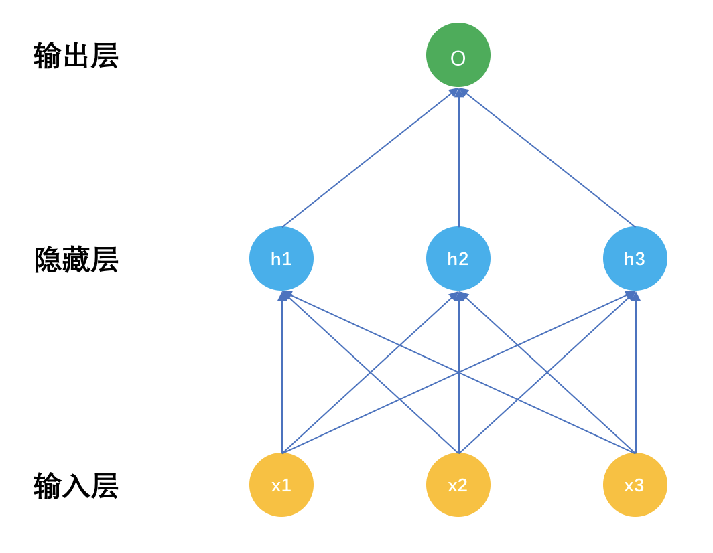
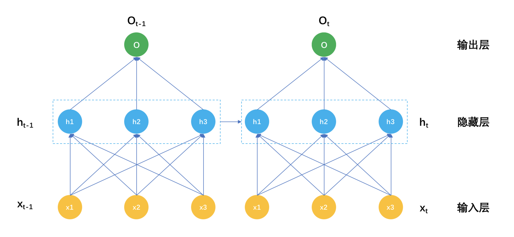
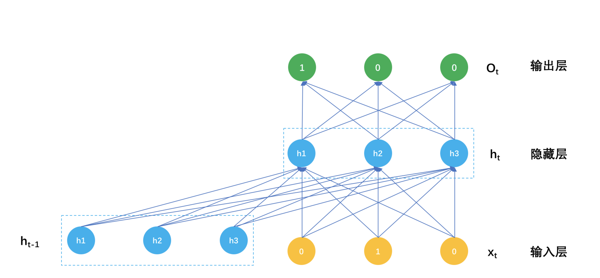
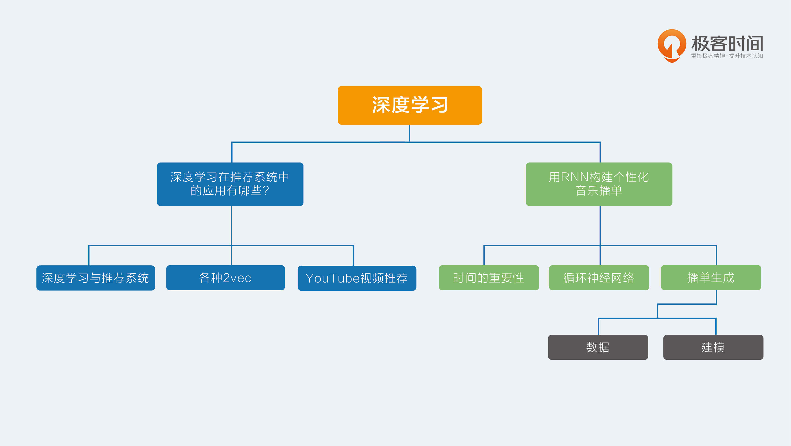

- 00 开篇词 用知识去对抗技术不平等.md.html
- 01 你真的需要个性化推荐系统吗_.md.html
- 02 个性化推荐系统有哪些绕不开的经典问题？.md.html
- 03 这些你必须应该具备的思维模式.md.html
- 04 画鬼容易画人难：用户画像的“能”和“不能”.md.html
- 05 从文本到用户画像有多远.md.html
- 06 超越标签的内容推荐系统.md.html
- 07 人以群分，你是什么人就看到什么世界.md.html
- 08 解密“看了又看”和“买了又买”.md.html
- 09 协同过滤中的相似度计算方法有哪些.md.html
- 10 那些在Netflix Prize中大放异彩的推荐算法.md.html
- 11 Facebook是怎么为十亿人互相推荐好友的.md.html
- 12 如果关注排序效果，那么这个模型可以帮到你.md.html
- 13 经典模型融合办法：线性模型和树模型的组合拳.md.html
- 14 一网打尽协同过滤、矩阵分解和线性模型.md.html
- 15 深度和宽度兼具的融合模型 Wide and Deep.md.html
- 16 简单却有效的Bandit算法.md.html
- 17 结合上下文信息的Bandit算法.md.html
- 18 如何将Bandit算法与协同过滤结合使用.md.html
- 19 深度学习在推荐系统中的应用有哪些_.md.html
- 20 用RNN构建个性化音乐播单.md.html
- 21 构建一个科学的排行榜体系.md.html
- 22 实用的加权采样算法.md.html
- 23 推荐候选池的去重策略.md.html
- 24 典型的信息流架构是什么样的.md.html
- 25 Netflix个性化推荐架构.md.html
- 26 总览推荐架构和搜索、广告的关系.md.html
- 27 巧妇难为无米之炊：数据采集关键要素.md.html
- 28 让你的推荐系统反应更快：实时推荐.md.html
- 29 让数据驱动落地，你需要一个实验平台.md.html
- 30 推荐系统服务化、存储选型及API设计.md.html
- 31 推荐系统的测试方法及常用指标介绍.md.html
- 32 道高一尺魔高一丈：推荐系统的攻防.md.html
- 33 和推荐系统有关的开源工具及框架介绍.md.html
- 34 推荐系统在互联网产品商业链条中的地位.md.html
- 35 说说信息流的前世今生.md.html
- 36 组建推荐团队及工程师的学习路径.md.html
- 加餐 推荐系统的参考阅读.md.html
- 结束语 遇“荐”之后，江湖再见.md.html
- 捐赠
20 用RNN构建个性化音乐播单
时间是一个客观存在的物理属性，很多数据都有时间属性，只不过大多时候都把它忽略掉了。前面讲到的绝大多数推荐算法，也都没有考虑“用户在产品上作出任何行为”都是有时间先后的。
正是认识到这一点，有一些矩阵分解算法考虑了时间属性，比如Time-SVD；但是，这种做法只是把时间作为一个独立特征加入到模型中，仍然没有给时间一个正确的名分。
时间的重要性
时间属性反应在序列的先后上，比如用户在视频网站上观看电视剧会先看第一集再看第二集，股市数据先有昨天的再有今天的，说“我订阅了《推荐系统36式》专栏”这句话时，词语也有先后，这种先后的关系就是时间序列。
具体到推荐系统领域，时间序列就是用户操作行为的先后。绝大数推荐算法都忽略操作的先后顺序，为什么要采取这样简化的做法呢？因为一方面的确也能取得不错的效果，另一方面是深度学习和推荐系统还迟迟没有相见。
在深度学习大火之后，对时间序列建模被提上议事日程，业界有很多尝试，今天以Spotify的音乐推荐为例，介绍循环神经网络在推荐系统中的应用。
循环神经网络
循环神经网络，也常被简称为RNN，是一种特殊的神经网络。再回顾一下神经网络的结构，示意图如下：

普通神经网络有三个部分，输入层x，隐藏层h，输出层o，深度神经网络的区别就是隐藏层数量有很多，具体多少算深，这个可没有定论，有几层的，也有上百层的。
把输入层和隐藏层之间的关系表示成公式后就是：
\[h = F(Wx) \]
就是输入层x经过连接参数线性加权后，再有激活函数F变换成非线性输出给输出层。
在输出层就是：
\[O = \\phi(Vh) \]
隐藏层输出经过输出层的网络连接参数线性加权后，再由输出函数变换成最终输出，比如分类任务就是Softmax函数。
那循环神经网络和普通神经网络的区别在哪？
区别就在于：普通神经网络的隐藏层参数只有输入x决定，因为当神经网络在面对一条样本时，这条样本是孤立的，不考虑前一个样本是什么，循环神经网络的隐藏层不只是受输入x影响，还受上一个时刻的隐藏层参数影响。
我们把这个表示成示意图如下：- 
解释一下这个示意图。在时刻t，输入是xt，而隐藏层的输出不再是只有输入层xt，还有时刻t-1的隐藏层输出h(t-1)，表示成公式就是：
\[h_{t} = F(Wx_{t} + Uh_{t-1})\]
对比这个公式和前面普通神经网络的隐藏层输出，就是在激活函数的输入处多了一个 \(Uh_{t-1}\) 。别小看多这一个小东西，它背后的意义非凡。
我一直在传递一个观点，隐藏层的东西，包括矩阵分解和各种Embedding得到的隐因子，是对很多表面纷繁复杂的现象所做的信息抽取和信息压缩。
那么上一个时刻得到的隐藏层，就是对时间序列上一个时刻的信息压缩，让它参与到这一个时刻的隐藏层建设上来，物理意义就是认为现在这个时刻的信息不只和现在的输入有关，还和上一个时刻的状态有关。这是时间序列本来的意义，也就是循环神经网络的意义。
播单生成
了解了循环神经网络原理之后，我再和你一起来看下它如何应用在推荐系统中的。
在网络音乐推荐中，尤其是各类FM类App，提倡的是一直听下去，比如是你在做家务时，你在开车时，一首歌接着一首歌地播下去，就很适合这些场景。
通常要做到这样的效果，有这么几种做法。
- 电台音乐DJ手工编排播单，然后一直播放下去，传统广播电台都是这样的。
- 用非时序数据离线计算出推荐集合，然后按照分数顺序逐一输出。
- 利用循环神经网络，把音乐播单的生成看成是歌曲时间序列的生成，每一首歌的得到不但受用户当前的特征影响，还受上一首歌影响。
Spotify采用了第三种办法，下面我就详细讲解这个推荐算法。
1.数据
个性化的播单生成，不再是推荐一个一个独立的音乐，而是推荐一个序列给用户。所用的数据就是已有播单，或者用户的会话信息。其中用户会话信息的意思就是，当一个用户在App上所做的一系列操作。
把这些数据，看成一个一个的文档，每一个音乐文件就是一个一个的词。听完什么再听什么，就像是语言中的词和词的关系。
2.建模
你可以把播单生成看成由若干步骤组成，每一步吐出一个音乐来。这个吐出音乐的动作实际上是一个多分类问题，类别数目就是总共可以选择的音乐数目，如果有100万首歌可以选择，那么就是一个100万分类任务。
这个分类任务计算输入是当前神经网络的隐藏状态，然后每一首歌都得到一个线性加权值，再由Softmax函数为每一首歌计算得到一个概率。表示如下：
\[p(o_{ti} | h_{t}) = \\frac{e^{v_{i}h}}{\\sum_{j \\in M}{e^{v_{j}h}}} \]
假如隐藏层有k个神经元，也就是说h是一个k维向量，输出层有m首歌可选，所以是一个One-hot编码的向量，也就是说一个m维向量，只有真正输出那首歌i是1，其他都是0，那么输出层就有k乘以m个未知参数。
再往前，计算隐藏层神经元输出时，不但用到输入层的信息，在这里，输入层也是一首歌，也有m首歌可以选择，所以输入向量仍然是一个One-hot编码的向量。
除此之外，每一个隐藏层神经元还依赖上一个时刻自己的输出值，隐藏层神经元是k个，一个k维向量。
按照隐藏层计算公式就是下面的样子。
\[h_{t} = F(Wx_{t} + Uh_{t-1})\]
W就是一个m乘以k的参数矩阵，U就是一个k乘以k的参数矩阵。
如此一来，循环神经网络在预测时的计算过程就是：
当用户听完一首歌，要预测下一首歌该推荐什么时，输入就是一个One-hot编码的m维度向量，用m乘以k形状的输入层参数矩阵，乘以这个m向量，然后用隐藏层之间的k乘k参数矩阵，去乘以上一个隐藏状态向量，两者都得到一个k维向量，相加后经过非线性激活函数，比如ReLU，这样就得到当前时刻的隐藏层输出值。
再用当前时刻的隐藏层输出值，经过k乘以m形状的输出层参数矩阵，得到一个m维向量，再用Softmax把这个m维向量归一化成概率值，就是对下一首歌的预测，可以挑选最大概率的若干首歌作为输出，或者直接输出概率最高的那首歌直接播放。
这个计算过程示意图如下：

一个播单生成模型的参数就是这么三大块。
- 连接输入和隐藏之间的矩阵 \(W_{m\\times{k}}\)；
- 连接上一个隐藏状态和当前隐藏状态的矩阵： \(U_{k \\times {k}}\)；
- 连接隐藏层和输出层的矩阵 \(V_{k\\times{m}}\)。
得到了这些参数，就得到了播单推荐模型，怎么得到呢？这里就再简要讲一下神经网络的参数如何训练得到。
你知道一个简单的逻辑回归模型参数如何训练得到吗？大致是这样几步：
- 初始化参数；
- 用当前的参数预测样本的类别概率；
- 用预测的概率计算交叉熵；
- 用交叉熵计算参数的梯度；
- 用学习步长和梯度更新参数；
- 迭代上述过程直到满足设置的条件。
神经网络的参数学习大致也是这个过程，但略为复杂的地方就是第4步和第5步，因为逻辑回归没有隐藏层，神经网络有隐藏层。那怎么办呢？我不打算讲解具体的做法，我打算给你建立一个直观印象。
还记得下面这个函数对x求导是怎么计算的吗？
\[f(x) = g(x)^2;\]
\[g(x) = e^x\]
函数f(x)是另一个函数gx的平方，函数g(x)又是一个指数函数。那么要对f(x0求导，就是一个链式规则，先把g(x)看成个一个整体求导，再乘以g(x)的求导结果：
\[f^{’}(x) = 2g(x)e^{x} = 2e^{x}e^{x} = 2e^{2x}\]
你就需要记住一点：链式规则，一路求导下去。
现在回到神经网路的训练，这个方法有个高大上的名字，叫做误差方向传播。
实际上就是链式求导法则，因为要更新参数，就需要计算参数在当前取值时的梯度，要计算梯度就要求导，要求导就要从交叉熵函数开始，先对输出层参数求导计算梯度，更新输出层参数，接着链式下去，对输入层参数求导计算梯度，更新输入层参数。
交叉熵是模型的目标函数，训练模型的目的就是要最小化它，也就是“误差反向传播”的“误差”。
相信聪明如你已经在直观上理解了一个普通神经网络是怎么训练的了，那么一个循环神经网络的参数训练有何不同呢？唯一不同就是多了一个参数矩阵，连接当前隐藏层和上一次隐藏层的参数矩阵U，也是链式求导法则的传播路径，也就是多了一些求导计算，更新参数方式并没有什么不同。
总结
好了，今天介绍了如何使用循环神经网络推荐音乐播单，播单是一个时间序列，听完上一首歌会影响下一首歌。
循环神经网络和普通神经网络相比，就是在两个时刻的隐藏状态之间多了网络连接。看上去这个网络连接只与上一个时刻有关，事实上，上一个状态又与上上个状态有关，所以实际上任意一个时刻的状态是与此前所有的状态有关的。
今天的应用虽然是以播单推荐为例，但其实循环神经网络还可以应用在很多其他地方，你对循环神经网络的应用有任何问题都可以留言给我，我们一起讨论。
感谢你的收听，我们下期再见。

© 2019 - 2023 Liangliang Lee. Powered by gin and hexo-theme-book.